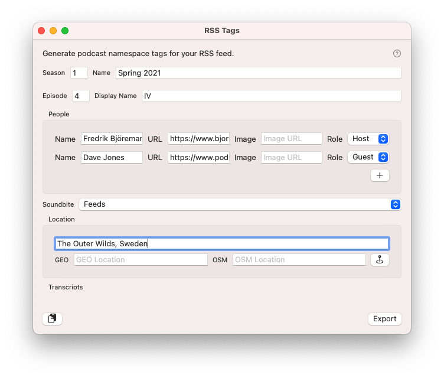
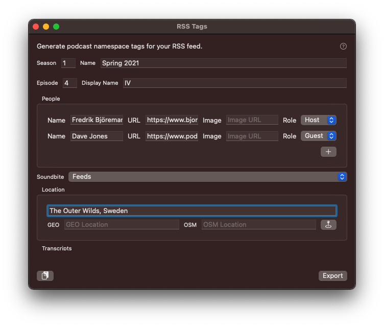
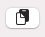
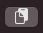
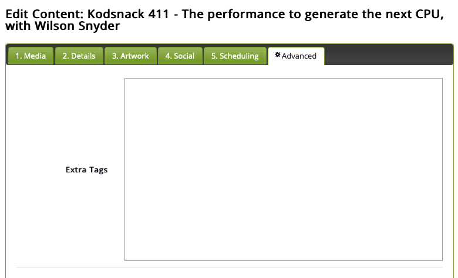

Thanks for your interest in Podcast Chapters. If your question isn't answered in this FAQ, feel free to reach out to me on Mastodon and I'll be sure to help you out.
Podcast Chapters 3.0 can generate RSS tags for the podcast namespace. If your podcast hosting solution doesn't yet support these tags, but does allow you to add tags to your RSS feed, you can create the tags straight from Podcast Chapters.
This is the very first version. If this is useful to you, I have many ideas for making things even better and more integrated with the rest of the app in the future. For example: specifying multiple soundbites, finer adjustment of soundbites, saving and re-use of all information. Get in touch and tell me what you like or would like to see changed!
Use the new "RSS Tags" window to enter the information relevant to you.


For more information about any of the tags, see the specification.
Once you're happy, either click "Export" to write the tags to an xml file, or hit the   button on the left side to skip the file and send the tags straight to the clipboard.
Then it depends on where and how your RSS feed is hosted and created. The tags created go into the feed item for an individual episode. Libsyn, for example, has a nice text field for "Extra Tags" under the tab "Advanced" when you edit episode data:

Note that to be valid, your feed needs to add a podcast namespace declaration: xmlns:podcast="https://podcastindex.org/namespace/1.0". This is typically placed in the root (rss) tag of the document, but can be added to child elements too if necessary.